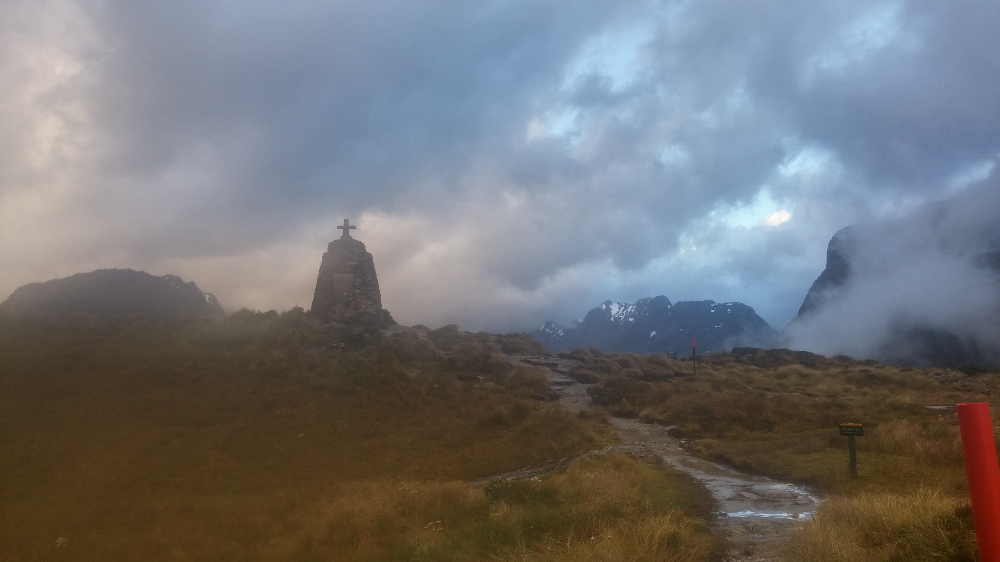

Milford Sound
Milford Sound / Piopiotahi is a fiord in the south west of New Zealand's South Island within Fiordland National Park, Piopiotahi (Milford Sound) Marine Reserve, and the Te Wahipounamu World Heritage site. It has been judged the world's top travel destination in an international survey (the 2008 Travelers' Choice Destinations Awards by TripAdvisor) and is acclaimed as New Zealand's most famous tourist destination. Rudyard Kipling had previously called it the eighth Wonder of the World.

Back